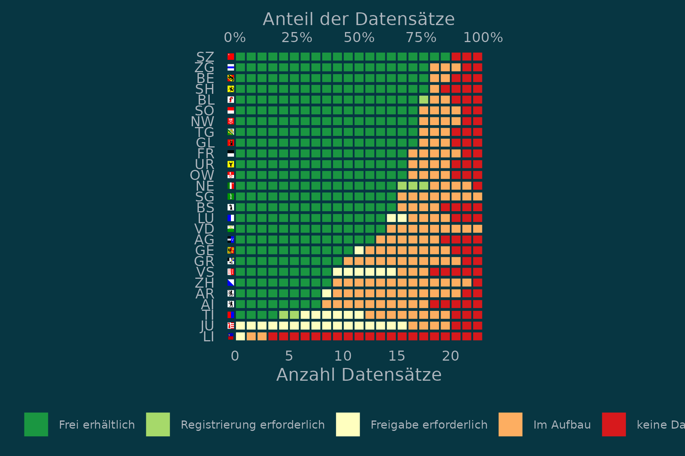
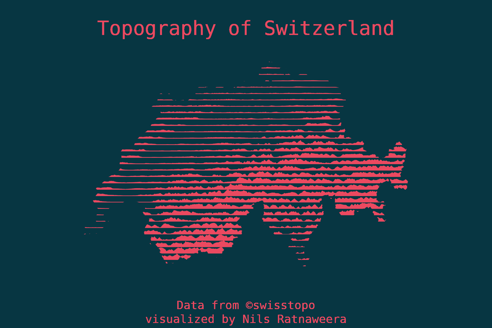

Federalism at its best: How the open data policy is handled across cantons
What changed when switching from Switzerland’s old coordinate system to the new one?
Comparing the performance of different methods to do a “point in polygon operation” with sf.

A beautiful way to visualize topography, inspired by Carla Martínez Sastre